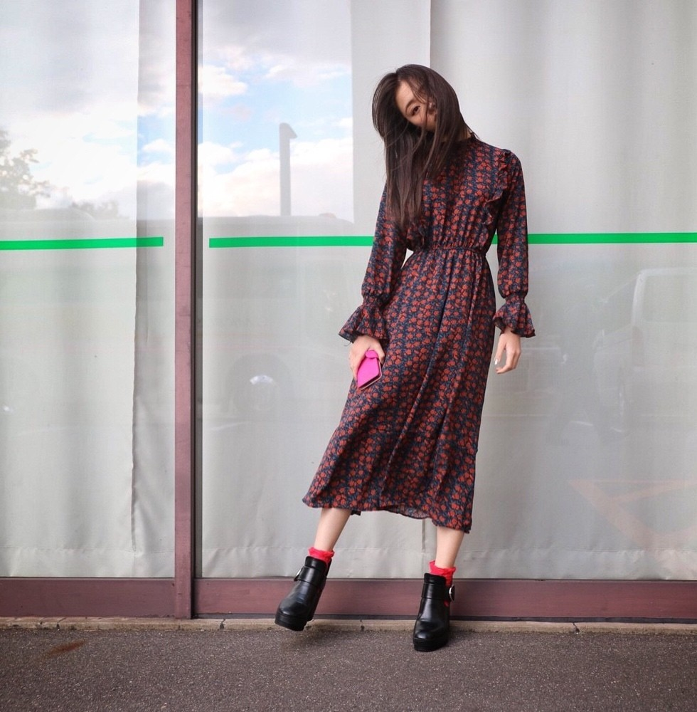
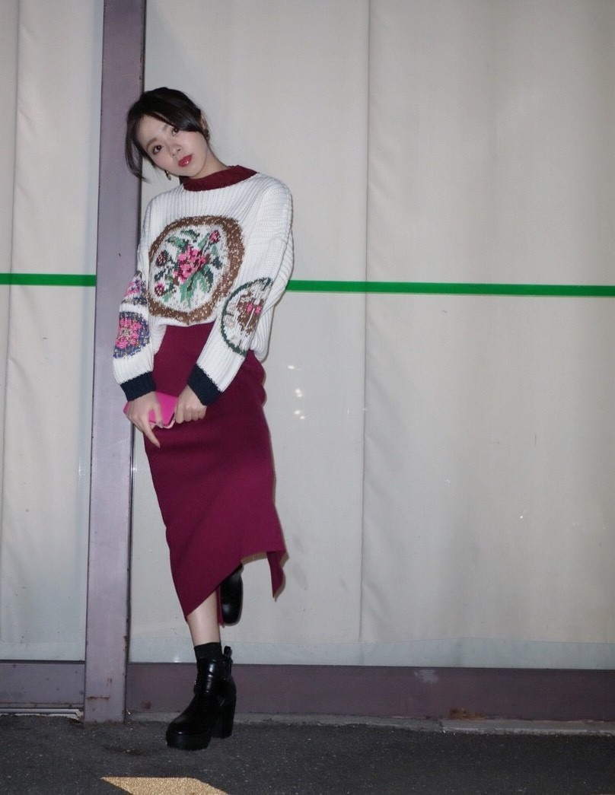
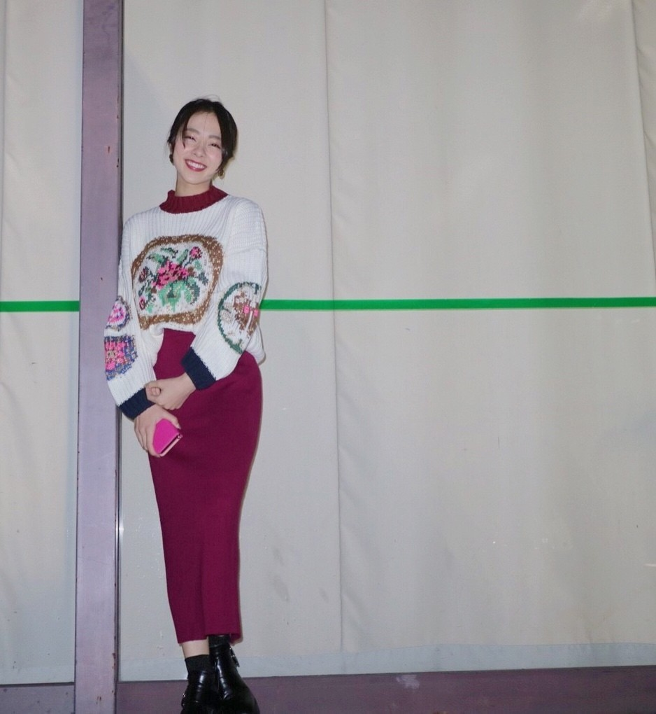

| 2017/11 05 Sun | 京都。私服。嬉しいなぁ。 |
おつかれさです♡
今日はいい天気ですね.＊

昨日は握手会で京都。。
4部と5部で私服チェンジしました♪
毎回ファンの皆さんが私服を楽しみにしてくださっている事が本当に嬉しい♡
4部...

4部...

1枚でサラッと...♡
花柄ワンピースです.＊
靴下はお花に合わせた朱色．
黒のショートブーツは安定．笑
あきないので同じような靴が玄関にズラーっと．
髪は自然なストレート♡
もっと写真沢山あるんです．
全然貼りきれないよ笑
また次のblogに載せたり，モバメや755に分散して載せますね♪
５部...

５部...

メンバー評判goodでした♡笑
メンバーに褒めて貰えるのは本当に嬉しいんですよ(^_^*)
この上のニットちゃんがかなり好評で♡
お花の刺繍なんですが、
袖が左右違うデザインで...
刺繍にゴールドが混ざってたりだとか...ポイントが沢山。
お花の1番濃い色がワインレッドだったので，同じワインレッドのスカートを合わせました。
そして靴下は朱色から黒にチェンジ。
髪は下でルーズに結びました。
ゴールドのコインみたいなピアス付けました。
さゆりんと2人になった時にね，
「ろってぃーはほんまお洒落やな～，同じようにお洒落してるつもりやのに何がどう違うんやろ～，リハーサル着でもいつもお洒落や～」っていっぱい褒めてくれたんです(*´-`)♡ それが本当に嬉しかったんです♡♡♡
さゆりん大好きや～。
という事でですね、もう始まる東京ドームに向けて色々準備がんばります‼︎
皆さん，最近本当に風邪が流行ってるいので体調には気をつけてくださいね？
こないだまで風邪ひいてたお前が言うなや～って話ですけどね，本当気をつけてくださいね♡
ではまた(*´-`)ノ
ありがとう。
コメント(161)
2017/11/05 14:30